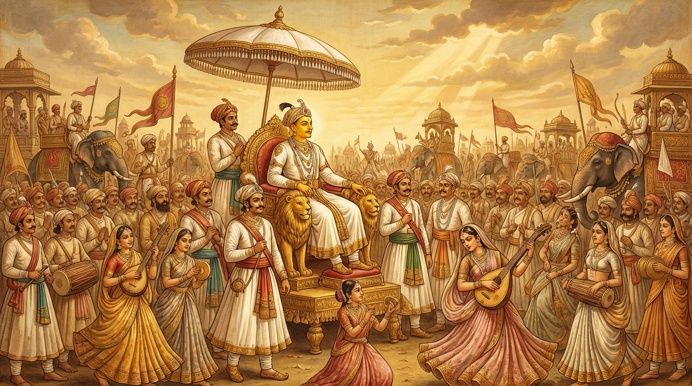

2. භීරුක ජාතකය (132)
“කුසලූපදෙසෙ ධිතියා දළ්හාය ච” යනාදීන් දැක්වෙන මේ ජාතක දේශනාව බුදුරජාණන් වහන්සේ ජේතවනාරාමයේ වැඩ වසන සමයෙහි, අජපාල නුග රුක මුල දී මාර දූවරුන්ගේ පෙළඹවීම් ඇතුළත් සූත්රය අරබයා දේශනා කරන ලදී. භාග්යවතුන් වහන්සේ මුල සිටම මෙසේ වදාළ සේක:
“තණ්හා, අරති, රගා යන මාර දූවරු බබළමින් පැමිණියහ. බුදුරජාණන් වහන්සේ මහා සුළඟින් පුළුන් රොදක් විසිරුවා හරින්නාක් මෙන් ඔවුන් එතැනින් පලවා හැරියහ.” (සං· නි· 1.161)
මෙසේ ඒ සූත්රය අවසානය තෙක් දේශනා කළ කල්හි, දිනක් දම් සභාවේ රැස්වූ භික්ෂූන් වහන්සේලා අතර කථාවක් ඇති විය. “ඇවැත්නි, සම්මා සම්බුදුරජාණන් වහන්සේ, මාර දූවරුන් විසින් නොයෙක් සිය ගණන් දිව්ය රූප මවාගෙන පොළඹවනු සඳහා පැමිණි කල්හි, දෑස් හැර බැලීමක් පවා නොකළ සේක. අහෝ! බුද්ධ බලය නම් ආශ්චර්යයකි” යනුවෙනි. ශාස්තෘන් වහන්සේ එතැනට වැඩම කර, “මහණෙනි, මා එන්නට පෙර කවර කථාවකින් යුතුව හුන්නාහු ද?” යි විමසා, “මේ නම් කථාවෙනි” යි පැවසූ කල්හි; “මහණෙනි, දැන් මා සියලු කෙලෙස් නසා සර්වඥතා ඥානයට පැමිණ සිටින බැවින්, ඒ මාර දූවරුන් දෙස නොබැලීම පුදුමයක් නොවේ. පෙර සම්බෝධිය සොයමින් කෙලෙස් සහිතව සිටි කාලයේ දී පවා, (යක්ෂණියන් විසින්) මවන ලද දිව්ය රූප ඉඳුරන් කඩා බිඳගෙන (ඉඳුරන්ට යට නොවී) කෙලෙස් වසයෙන් නොබලා ගොස් මහා රාජ්යයට පැමිණියෙමි” යි වදාරා අතීත කථාව ගෙනහැර දැක්වූ සේක.
පෙර බරණැස් නුවර බ්රහ්මදත්ත රජු රාජ්යය කරන සමයෙහි බෝධිසත්වයෝ සොහොයුරන් සියයකට බාලව උපන්හ. මුළු විස්තරය මීට පෙර (තෙළපත් සිඳුව හෙවත්) තක්කසිලා ජාතකයෙහි කී පරිදි දත යුතුය. එසමයෙහි තක්සලා නුවර වැසියෝ නුවරින් පිටත ශාලාවක දී බෝසතුන් වෙත පැමිණ, රාජ්යය භාර ගන්නා ලෙස ඉල්ලා, රාජ්යාභිෂේක කළහ. එදින නගර වැසියෝ නගරය දිව්ය පුරයක් මෙන් ද, රාජ භවනය ශක්ර භවනය මෙන් ද අලංකාර කළහ. එකල්හි බෝසතාණෝ නගරයට පිවිස, රාජ මාලිගාවේ මහා තලයෙහි (උඩු මහලෙහි) ඔසවන ලද ධවල ඡත්ර ඇති උතුම් රත්න පර්යංකයෙහි දිව්ය රාජ ලීලාවෙන් වැඩ හුන්හ. ඇමතිවරු ද, බ්රාහ්මණ ගෘහපතීහු ද, ක්ෂත්රිය කුමාරවරු ද සියලු ආභරණයෙන් සැරසී පිරිවරා සිටියහ. දිව්ය අප්සරාවන් වන් සොළොස් දහසක් නළඟනෝ නාට්ය, ගීත හා වාදනයෙහි දක්ෂව, උසස් විලාසයෙන් යුතුව නැටුම් ගැයුම් වැයුම් පැවැත්වූහ. ගීත හා වාදන ශබ්දයෙන් රාජ භවනය මේඝ ගර්ජනාවෙන් පිරුණු මහා සාගර කුස මෙන් ඒකානාද විය. බෝසතාණෝ තමන්ගේ ඒ ශ්රී සෞභාග්යය දෙස බලමින්ම මෙසේ සිතූහ: “ඉදින් මම ඒ යකින්නන් විසින් මවා පෑ දිව්ය රූප දෙස බැලුවේ නම්, ජීවිතක්ෂයට පත්වන්නෙමි. (එවිට) මේ සෞභාග්යය දැකීමට නොලබන්නෙමි. පසේබුදුවරුන්ගේ අවවාදයෙහි පිහිටි බැවින් මම මේ සම්පත්තිය ලැබුවෙමි.” මෙසේ සිතා ප්රීති වාක්ය ප්රකාශ කරමින් මෙම ගාථාව වදාළහ:

“දක්ෂ වූ පසේබුදුරජාණන් වහන්සේලාගේ උපදේශයන්හි ඥානයෙන් යුතුව දැඩිව පිහිටි හෙයින් ද, (අකුසලයට ඇති) බිය නිසා ද, අපි රකුසියන්ගේ වසඟයට නො ගියෙමු. ඒ මහා බිය මධ්යයේ මට ඒ සුවපත් බව (ක්ෂේම භාවය) ඇති විය.”
එහි “කුසලූපදෙසෙ” යනු දක්ෂයන්ගේ උපදේශයෙහි හෙවත් පසේබුදුරජාණන් වහන්සේලාගේ අවවාදයෙහි යන අර්ථයි. “ධිතියා දළ්හාය ච” යනු දැඩි වූ ද, ස්ථිර වූ ද, නොසිඳුණු නිරන්තර වීර්යයෙන් යුක්ත වීමයි. “අනිවත්තිතත්තා භයභීරුතාය ච” යනු භය සහ භීරුතාව නිසා ආපසු නොහැරුණු බැවිනි. එහි “භය” යනු සිතෙහි ඇතිවන තැතිගැනීම් මාත්රය වන සුළු බියයි. “භීරුතා” යනු ශරීරය කම්පා කරවන මහා භයයි. “මේ යකින්නෝ නම් මනුෂ්යයන් භක්ෂණය කරන්නෝය” යි භයානක අරමුණ දැක පවා මහාසත්වයන්ට මේ භය හා භීරුතා යන දෙකම ඇති නොවිණි. එහෙයින් “අනිවත්තිතත්තා” යි කියන ලදී. එනම්, භය භීරුතා නොමැති බැවින්, භයානක අරමුණ දැක ද ආපසු නොහැරුණු ස්වභාවයෙන් යුක්ත වූ යන අර්ථයි. “න රක්ඛසීනං වසමාගමිම්හසෙ” යනු යක්ෂ කාන්තාරයේ දී ඒ රකුසියන්ගේ වසඟයට අපි නොගියෙමු. යම් හෙයකින් අපට කුසල උපදේශය ද, දැඩි වීර්යය ද තිබුණේ ද, භය භීරුතා නොමැති බැවින් ආපසු නොහැරෙන ස්වභාවය ද තිබුණේ ද, එබැවින් රකුසියන්ගේ වසඟයට නොගියෙමු යි කියන ලදී. “ස සොත්ථිභාවො මහතා භයෙන මෙ” යනු රකුසියන් වෙතින් පැමිණිය හැකිව තිබූ දුක් දොම්නස් නම් වූ ඒ මහා බියෙන් මිදී, මට අද මේ සොත්ථි භාවය හෙවත් ක්ෂේම භාවය ද, ප්රීති සෞමනස්ස භාවය ද ඇති විය යනුයි.
මෙසේ මහාසත්වයන් වහන්සේ මෙම ගාථාවෙන් ධර්මය දේශනා කොට, දැහැමින් රාජ්යය කරවා, දානාදී පින්කම් කොට කම් වූ පරිදි මිය පරලොව ගියහ.
ශාස්තෘන් වහන්සේ මේ ධර්ම දේශනාව ගෙනහැර දක්වා ජාතකය සමාධාන කළ සේක. “එකල තක්සලාවට ගොස් රාජ්යයට පැමිණි කුමාරයා නම් දැන් මම වන්නෙමි.”
දෙවැනි වූ භීරුක ජාතක වර්ණනාව නිමියේය.